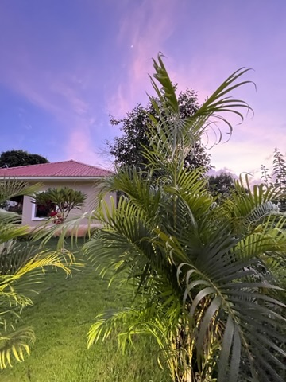

SYNTHATTIC
Independent producer & DJ
Based in India. Playing everywhere.

Music for the in-between.
STREAM SYNTHATTIC



Out there.
In here.
Some things
need motion.
Stream
SYNTHATTIC.
Listen on your favourite platforms.
A little about
the sound.
SYNTHATTIC is the artist project of Ashutosh Purohit, an independent producer and DJ who has spent close to a decade developing his sound through releases, DJ sets, and experimentation.
His music moves between atmospheric electronica, Afro-inspired club rhythms, progressive and organic house, techno, and dub-leaning moods. The thread running through it is a feel for detail: layered textures, considered percussion, and a balance between introspection and dance-floor energy.
Across his journey, his selected press materials reference artists such as John 00 Fleming, Pavel Petrov, Joris Vroon, AFFKT, Rafael Cerato, Enamour, Massane, Frankey & Sandrino, Nikhil Chinappa, Citizen Kain, Metodi Histrov, and Minitech Project.
In good
company.
A selection of artists connected to SYNTHATTIC’s wider electronic music world, drawn from the supplied press materials.
Let’s talk.
For bookings, press, festivals, support slots and collaborations.